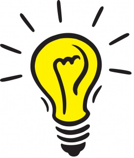

Kebabologisk Entreprenørskap Bakeri Avdeling Bergen

Om våres ide.
Du lurer kanskje på hvorfor, hvorfor vi valgte å lage en nettside om kebab.
Vell, for oss var valget enkelt, vi elsker kebab.
Sammen satt vi oss ned og tenkte hardt og lenge, på hvordan vi kunne hjelpe
kebabmiljøet i Bergen og vi kom fram til hva vi ønsket å gjøre.
Det vi gjør er å skape en informasjonskanal om kebab I Bergen,
vi må huske på at når en kebabsjappe selger en kebab,
så selger de ikke bare et produkt, de selger en følelse, de selger en tanke, en ide.
REKLAME